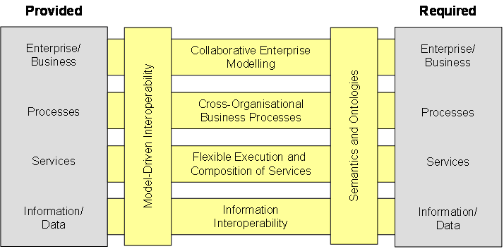
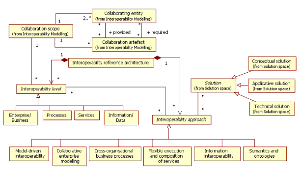

")

Interoperability reference architecture
Overview
The ATHENA Interoperability Framework (AIF) defines an interoperability reference architecture that relates the modelling solutions coming from the three different research areas of ATHENA, namely enterprise modelling, architectures and platforms, and ontology. The figure below illustrates the reference architecture that focuses on the provided and required artefacts of two collaborating enterprises.

In this section we will formalise the representation of the reference architecture as a part of the interoperability reference architecture concept domain (defined in AIF conceptual model). A formalized view of the conceptual model is shown in the figure below and elaborated further below.

Interoperability levels
An interoperability reference architecture relates a set of interoperability levels and a set of interoperability approaches. An interoperability level denotes the capability level of two or more collaborating entities to support interoperation.
- Interoperability at the enterprise/business level should be seen as the organisational and operational ability of an enterprise to factually co-operate with other, external organisations in spite of e.g. different working practices, legislations, cultures and commercial approaches. From an ICT system perspective it means that the ICT infrastructure is flexible and adaptable to the changing business requirements and the organisational structures of the enterprise.
- Interoperability at the processes level is the capability to make various processes work together. A process defines the sequence of the services (functions) according to some specific needs of a collaborating entity.
- Interoperability at the services level is concerned with identifying, composing and executing various applications (designed and implemented independently). Services are an abstraction and an encapsulation of the functionality provided and/or required by a collaborating entity.
- Interoperability at the information/data level is related to the management, exchange and processing of different documents, messages and/or structures by different collaborating entities.
Interoperability approaches
The concept interoperability approach is here used to designate the six technology approaches resulting from the research activities performed in ATHENA. The interoperability approaches help us to support interoperations at the various interoperability levels.
For each of these levels we prescribe a model-driven interoperability approach that cuts across the interoperability levels where models are used to formalise and exchange the provided and required artefacts that must be negotiated and agreed upon. ATHENA defines a set of metamodels and languages that can be supported by tools and methods to construct the models in question. Starting at the top:
- Collaborative enterprise modelling concerns the exchange and alignment of knowledge models for describing the processes, organisations, products and systems in the collaboration context. Collaborative enterprise modelling is supported by the POP* metamodel [ATHENA A1 2005a].
- Modelling of cross-organisational business processes focuses on defining process views that describes the interactions between two or more collaborating entities. In a networked enterprise, it is also necessary to study how to connect internal processes of two companies to create cross-organisational business process. This is supported by the CBP (cross-organisational business process) metamodel [ATHENA A2 2005b].
- Flexible execution and composition of services is concerned with identifying, composing and executing various applications. Modelling flexible execution and composition of services can be supported by the PIM4SOA (platform-independent model for service-oriented architecture) metamodel [ATHENA A6 2006b, Sourceforge.net 2006].
- Information interoperability is related to management, exchange and processing of different documents, messages and other information structures. The XML Schema Definition Language (XSD) [W3C 2004a] will be the foundation for ATHENA solutions at this interoperability level.
To overcome the semantic barriers which emerge from different interpretations of syntactic descriptions, precise, computer processable meaning must be associated with the models expressed on the different levels. It has to be ensured that semantics are exchangeable and based on common understanding in order to enhance interoperability. This can be achieved using ontologies and an annotation formalism for defining meaning in the exchanged models. The OPAL (object, process, actor modelling language) [ATHENA A3 2005] is an ontology language that offers a number of modelling notions to more precisely define the meaning of concepts. This allows us to relate concepts at the different levels (ensuring consistency amongst the levels) and relate concepts at the same level e.g. supporting information interoperability.